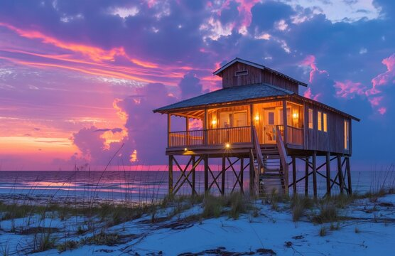
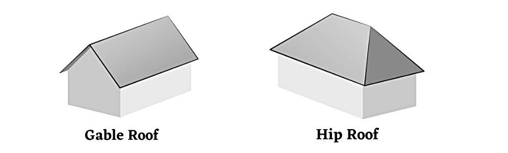

Extreme Weather and Engineering Solutions
What is Extreme Weather?
Extreme weather refers to any weather conditions that fall outside of normal patterns. These include heavy winds, thunderstorms, floods, heat waves, tornados, hurricanes, hail, and blizzards.

A powerful hurricane viewed from space, showing the characteristic spiral structure and eye of the storm
Important to know: Extreme weather is caused by natural processes and occurs all over the globe. While we can't prevent extreme weather, we can reduce its impact through preparation and engineering solutions.
Weather patterns help us predict when certain types of extreme weather might occur. For example, through centuries of data collection, we know that hurricanes in the Atlantic Ocean typically develop between June 1st and November 30th each year. This knowledge allows people living in coastal areas to prepare for potential hurricanes during this season.
Types of Extreme Weather
Hurricanes
Hurricanes are powerful tropical storms with strong winds and heavy rainfall. They form over warm ocean waters and can cause significant damage to coastal areas through flooding, storm surge, and high winds.
Tornadoes
Tornadoes are columns of air that spin violently. They can have wind speeds reaching up to 300 miles per hour, which is strong enough to destroy houses and uproot trees.
A tornado touching down in an open field, demonstrating its destructive potential
In the United States, there's an area known as "Tornado Alley" that stretches from Texas to North Dakota, which experiences more tornadoes than any other region.

Map showing Tornado Alley, stretching from Texas to North Dakota, where tornadoes occur with greater frequency
Floods
Floods occur when water overflows onto normally dry land. They can be caused by heavy rainfall, storm surge from hurricanes, or rapid snowmelt. Coastal areas are particularly vulnerable to flooding during extreme weather events.
Lightning Storms
Lightning is electricity moving through the air. When lightning strikes homes, it can damage structures and electrical appliances. Lightning storms are often accompanied by thunder and heavy rainfall.

Lightning striking the One World Trade Center in New York City, demonstrating the power and danger of electrical storms
Heat Waves
Heat waves are extended periods of unusually high temperatures. They can be particularly dangerous in urban areas where concrete and asphalt absorb and retain heat, creating "heat islands" that are significantly warmer than surrounding rural areas.
Did you know? Tornado Alley experiences more tornadoes due to the unique geography of the central United States, where cold, dry air from Canada meets warm, moist air from the Gulf of Mexico, creating ideal conditions for tornado formation.
Engineering Solutions for Coastal Flooding
Coastal areas experience high waves during extreme weather events like hurricanes. Engineers have developed several techniques to protect these areas from flooding and erosion:
Seawalls
Seawalls are concrete barriers built along beaches that experience large waves. These physical barriers block water and prevent flooding as water rises during coastal storms.
Recurved Walls
Recurved walls are a special type of seawall with a curved surface. These walls not only block waves but also redirect the wave energy back out toward the ocean. Tests have shown that recurved walls are among the most effective methods for reducing coastal flooding.
A recurved seawall designed to redirect wave energy back toward the ocean, providing superior protection against coastal flooding
Comparing Flood Protection Methods: In tests comparing different flood protection methods, areas with no protection collected over 1000 mL of water, areas with high seawalls collected 300 mL, areas protected by rocks collected 100 mL, and areas with recurved walls collected the least amount of water, making them the most effective solution.
Elevated Buildings
Another engineering solution for flood protection is to construct buildings on stilts or on top of garages. This elevates the living spaces above potential flood levels, keeping water from entering homes. This approach is common in many coastal communities around the world.

Colorful houses built on stilts along a coastline, designed to protect against flooding during high tides and storms
Think About It:
If you were designing a coastal community, which flood protection methods would you combine for maximum effectiveness? Consider the advantages and limitations of each approach.
Engineering Solutions for High Winds
High winds from hurricanes and tornadoes can cause severe damage to buildings. Engineers have designed homes with specific features to withstand these powerful forces.
Roof Design: Hip Roofs vs. Gable Roofs
The shape of a roof significantly affects how it responds to high winds:

Comparison between gable roof (left) and hip roof (right) designs, showing how hip roofs provide better wind resistance
| Gable Roof |
Hip Roof |
| Has two sides that form an "A" shape |
Has all sides sloped downward |
| Flat ends create surfaces where wind can push directly |
Angled design allows wind to be deflected upward |
| More vulnerable in high winds - wind can push the roof off |
More resistant to high winds |
When wind hits a gable roof, it pushes directly against the flat surface, potentially lifting the entire roof off the house. In contrast, a hip roof's slanted design causes the wind to be deflected upward, reducing the direct force on the roof structure.
Tornado-Resistant Building Materials
Engineers have developed special building panels that can withstand the extreme winds of a tornado. These reinforced panels can be used to create safe rooms within homes. Even if a tornado destroys most of the house, the safe room will remain intact, providing protection for the occupants.

Special reinforced building panels designed to withstand tornado-force winds, used to create safe rooms within homes

The destructive power of tornadoes demonstrates why specialized building techniques are necessary in tornado-prone regions
Engineering Challenge:
How would you design a house to withstand both flooding and high winds? What features would you include, and how would they work together to protect against multiple hazards?
Engineering Solutions for Lightning
Lightning is a powerful electrical discharge that can damage buildings and electrical systems. While we can't prevent lightning, we can redirect its energy safely away from structures.
Lightning Rods
Benjamin Franklin discovered that lightning is electricity moving through the air and invented the lightning rod as a protective measure. Lightning rods are metal conductors mounted on or near buildings and connected to the ground through wires.

A lightning rod installed on a building roof, designed to safely direct lightning strikes to the ground
When lightning strikes, the rod provides a low-resistance path for the electrical current to follow, directing it safely into the ground instead of through the building. This prevents electrical surges that can damage electronics and reduces fire risk.
How Lightning Rods Work: In tests comparing houses with and without lightning rods, the house with the rod maintained power during a simulated lightning strike, while the house without a rod lost power due to electrical damage. This demonstrates the effectiveness of this simple but ingenious solution.
Historical Note: Benjamin Franklin conducted his famous kite experiment in 1752 to demonstrate that lightning was electrical in nature. This led to his invention of the lightning rod, which has saved countless buildings from fire and damage over the centuries.
Engineering Solutions for Heat
Urban areas often experience higher temperatures than surrounding rural areas due to the "heat island effect." Engineers have developed strategies to reduce this effect and mitigate the impacts of heat waves.
Reflective Surfaces
One effective strategy is painting roads and other paved surfaces with reflective white paint. Dark surfaces absorb heat, while white surfaces reflect it back into the atmosphere. By using reflective paint on roads, parking lots, and rooftops, cities can significantly reduce surface temperatures during heat waves.
A street painted with reflective white paint to reduce heat absorption and lower urban temperatures during heat waves
This solution is particularly important in urban areas where there are extensive paved surfaces that contribute to the heat island effect. The reflective paint helps keep these surfaces cooler, which in turn helps keep the surrounding air temperature lower.
Other Heat Mitigation Strategies
- Planting trees and vegetation to provide shade and cooling through evapotranspiration
- Installing green roofs covered with plants that absorb less heat than traditional roofing materials
- Using building materials that reflect rather than absorb solar radiation
Explore Your Environment:
Walk around your neighborhood on a hot day. Touch different surfaces like concrete, asphalt, grass, and surfaces in shade. Which feel hotter? Which feel cooler? Why do you think there are differences?
Predicting and Preparing for Extreme Weather
While we can't prevent extreme weather, we can predict when and where it might occur based on historical patterns and prepare accordingly.
Using Weather Patterns
By analyzing data collected over many years, scientists can identify patterns in when and where extreme weather events occur. For example, we know that hurricane season in the Atlantic Ocean runs from June 1st to November 30th because historical data shows this is when hurricanes typically form in this region.
Tornado Prediction
While we can identify areas like Tornado Alley that are prone to tornadoes, predicting exactly when and where a specific tornado will touch down remains challenging. This is why having proper building techniques and safety plans is so important in tornado-prone areas.
Preparation Strategies
Knowledge of weather patterns allows communities to prepare for potential extreme weather events:
- Building codes can require wind-resistant roofs in hurricane-prone areas
- Coastal communities can install seawalls and design elevated buildings
- Homes in Tornado Alley can include safe rooms with reinforced walls
- Buildings in areas with frequent lightning can be equipped with lightning rods
The Value of Prediction: By knowing when, where, and what kind of extreme weather might occur, people can be prepared and hopefully reduce the impact when an event does happen. Preparation saves lives and reduces property damage.
Testing Engineering Solutions
Engineers test their solutions before implementing them in the real world. This helps them determine which designs will be most effective against extreme weather conditions.
Testing Flood Protection Methods
Engineers use wave machines to simulate ocean waves and test different barriers. By measuring how much water gets past each type of barrier, they can determine which design provides the best protection. In these tests, they've found that recurved walls are particularly effective because they not only block waves but also redirect their energy back toward the ocean.
Testing Wind-Resistant Designs
Engineers build models of different roof designs and test them using powerful air blowers to simulate hurricane or tornado winds. By observing how each design responds to the wind, they can identify which are most likely to remain intact during a real storm. These tests have consistently shown that hip roofs perform better than gable roofs in high winds.
Testing Lightning Protection
To test lightning protection systems, engineers create models with electrical systems and simulate lightning strikes. By comparing the effects on protected versus unprotected models, they can demonstrate the effectiveness of lightning rods and other protective measures.
Design Challenge:
Imagine you're an engineer tasked with designing a school building in an area that experiences hurricanes, lightning storms, and occasional flooding. What features would you include in your design to protect against all these hazards? How would you test your design to ensure it would be effective?
Key Vocabulary
| Term |
Definition |
| Extreme Weather |
Any weather that falls outside the realm of normal patterns |
| Patterns |
A series of repeating events |
| Engineering Solutions |
New inventions and building methods that can help reduce the effects of extreme weather |
| Gable Roof |
A type of roof in which two sides form an "A" shape |
| Hip Roof |
A type of roof in which ALL sides slope down |
| Lightning Rod |
A metal rod mounted on or near a building that protects it against electrical surges by redirecting electrical energy into the ground |
| Seawall |
A concrete wall built along beaches to block waves and prevent flooding |
| Recurved Wall |
A seawall with a curved surface that redirects wave energy back to the ocean |
| Tornado Alley |
An area stretching from Texas to North Dakota known for having more tornadoes than any other region |
Review and Check Your Understanding
Knowledge Check:
- What is extreme weather, and what are some examples?
- Why are hip roofs more effective than gable roofs in areas with high winds?
- How do lightning rods protect buildings from lightning strikes?
- What are three different methods engineers have developed to protect coastal areas from flooding?
- How does reflective white paint help reduce the impact of high heat in urban areas?
- What is Tornado Alley, and why does this region experience more tornadoes?
- How can predicting extreme weather help reduce its impact?
- Based on test results, which coastal protection method is most effective against flooding: high seawalls, rocks, or recurved walls?
- What type of roof would you recommend for a house built in an area that experiences hurricanes, and why?
- What kind of building features would you recommend for a home in an area that experiences tornadoes?
Application Challenge:
Imagine you are a city planner in a coastal town that experiences hurricanes, lightning storms, and occasional heat waves. Design a comprehensive plan to protect your community from these extreme weather events. Include specific engineering solutions for different types of buildings and infrastructure. Explain how each solution works and why you've chosen it.
Conclusion
Extreme weather events are natural phenomena that we cannot prevent, but through engineering solutions and proper preparation, we can significantly reduce their impact on our communities. By understanding the patterns of extreme weather and implementing appropriate protective measures, we can build safer, more resilient structures and communities.
Remember that different types of extreme weather require different solutions. Hip roofs protect against high winds, lightning rods redirect electrical energy safely to the ground, recurved seawalls defend against coastal flooding, and reflective surfaces help mitigate urban heat. By combining these solutions as needed, we can create comprehensive protection against the various challenges posed by extreme weather.
Final Thought: Engineering solutions for extreme weather are a perfect example of how humans use scientific knowledge and creative thinking to solve problems and adapt to our environment. These solutions continue to evolve as we learn more about extreme weather patterns and develop new materials and techniques.